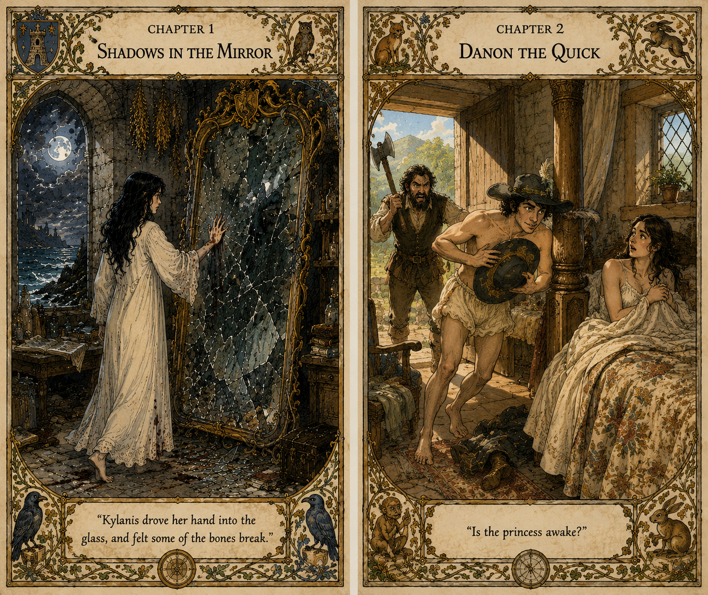

Chapter 1: Shadows in the Mirror
0:49
Chapter

Complete audiobook
All audio chapters
105 files
Chapter 2: Danon the Quick
2:43
Chapter 3: Unforeseen Consequences
3:38
Chapter 4: Road's End
3:05
Chapter 5: Another Small Gamble
3:56
Chapter 6: Dark Awakening
3:02
Chapter 7: Danon Spots the Cro
1:07
Chapter 8: Otan of the Cro
6:06
Chapter 9: Kylanis
4:43
Chapter 10: Otan and Danon Trust
9:46
Chapter 11: A Boy's Peaches
3:57
Chapter 12: Otan's Village Destroyed
3:41
Chapter 13: Kylanis Goes to Town
7:29
Chapter 14: Otan's Capture
3:52
Chapter 15: Kaleb Grows Up
7:44
Chapter 16: Artisanimus
7:13
Chapter 17: Danon and Selda
16:06
Chapter 18: Palin and the Prince
3:26
Chapter 19: Rescue
3:52
Chapter 20: The Prince Searches In Vain
3:30
Chapter 21: The Three Part Ways
3:54
Chapter 22: The Battle
3:16
Chapter 23: Danon's rescue
5:19
Chapter 24: Kaleb and the Goblyns
12:05
Chapter 25: Danon and Kylanis Meet
17:18
Chapter 26: Killing
2:46
Chapter 27: Grukhan and the Scorpion
11:12
Chapter 28: The Song of the Night
10:33
Chapter 29: Under the Bridge
4:44
Chapter 30: History
4:55
Chapter 31: Children's Games
8:31
Chapter 32: The Tower Guard
3:13
Chapter 33: Death Blade
10:20
Chapter 34: The Death Card and Loyal Friend
10:09
Chapter 35: Run
3:36
Chapter 36: Wisdom
3:07
Chapter 37: The War Bone
10:08
Chapter 38: The White Sail
7:54
Chapter 39: The Angel
3:00
Chapter 40: We will not need to follow him
2:23
Chapter 41: The Inn
4:21
Chapter 42: The Atlin Giant
12:02
Chapter 43: The Shadow's Curse
8:14
Chapter 44: Between Death and Sleep
3:32
Chapter 45: Let's Not Talk About Our Parents
3:05
Chapter 46: Flee
4:58
Chapter 47: The Throne
5:46
Chapter 48: Safety
2:12
Chapter 49: Sharky
6:18
Chapter 50: The Stockade
3:10
Chapter 51: The Kiss
2:27
Chapter 52: Brother Sinus
5:47
Chapter 53: Nothing
2:52
Chapter 54: The Carriage
5:10
Chapter 55: The Guti-nina
5:34
Chapter 56: Something Very Valuable
5:08
Chapter 57: Reason
2:58
Chapter 58: Her People
4:47
Chapter 59: Bozworth and Brother Peter
7:57
Chapter 60: The Way of the Clan
3:38
Chapter 61: Westholm
5:15
Chapter 62: The Dream, the Nightmare and the Snake
6:12
Chapter 63: A Witch
5:30
Chapter 64: The Price
8:25
Chapter 65: The Mob of Evil
3:48
Chapter 66: Not Ever Again
4:32
Chapter 67: The Misunderstanding
11:28
Chapter 68: PART 11
0:03
Chapter 69: The War of Three Forces
2:48
Chapter 70: Dance With Me
9:28
Chapter 71: Two Riders
7:34
Chapter 72: Wisdom
6:01
Chapter 73: The Truce
3:08
Chapter 74: Practice
9:34
Chapter 75: Anger
5:18
Chapter 76: Neither a Warrior Nor a Wizard
11:27
Chapter 77: The Froud
9:21
Chapter 78: Playing with Horses
5:11
Chapter 79: The Garden
4:58
Chapter 80: Words of War
14:55
Chapter 81: We Will Need Their Help
7:58
Chapter 82: Rangers
6:39
Chapter 83: I am a Queen
7:05
Chapter 84: Seeds
8:58
Chapter 85: The Oubliette
8:19
Chapter 86: The Fool
4:08
Chapter 87: Twelve Barrels
2:05
Chapter 88: The Yearling Colt and a Horse
6:15
Chapter 89: No Mistakes
2:35
Chapter 90: Death Blade
5:22
Chapter 91: Healer Protector
2:02
Chapter 92: To Laugh
4:10
Chapter 93: Glak and Otak Promise
11:27
Chapter 94: Vande'he Rangers
1:38
Chapter 95: Made Him Swear Not to Leave
1:36
Chapter 96: The Rite of the War Bone
4:05
Chapter 97: Bleating Goat's Udder
6:25
Chapter 98: The Alliance - Kaleb Smiled
6:59
Chapter 99: The Greater Evil
5:24
Chapter 100: The Mirror
5:01
Chapter 101: The Bridge
6:24
Chapter 102: The Sprite
6:05
Chapter 103: To Kill a Snake
4:19
Chapter 104: The Bridge of Thrones
4:15
Chapter 105: The End
0:03